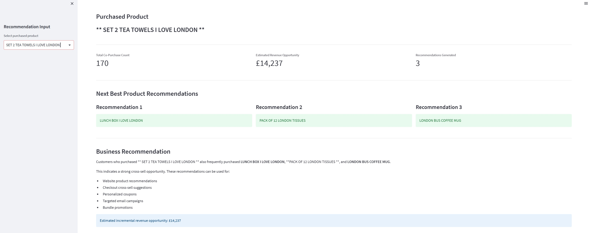

AI & Executive Analytics
Executive Analytics Intelligence
AI-powered decision-support platform combining finance, product, marketing, customer, support, and social data into one connected executive view.
View Case Study →CUSTOMER ANALYTICS PROJECT
Customer Segmentation & Recommendation Engine
Interactive customer analytics platform that uses RFM segmentation, Pareto analysis, and Market Basket Analysis to identify high-value customers, uncover revenue opportunities, and recommend next-best products for cross-sell and customer growth.

BUSINESS CHALLENGE
Retail and e-commerce businesses often have large volumes of transaction data but limited visibility into which customers offer the strongest growth potential, which products are commonly purchased together, and where cross-sell opportunities exist.
The goal was to build an interactive customer analytics platform that transforms transaction data into actionable growth insights using RFM segmentation, Pareto analysis, Market Basket Analysis, and next-best-product recommendations.
BUSINESS SNAPSHOT
Transactions analyzed
Customers evaluated
Estimated revenue opportunity
Estimated cross-sell opportunity
SOLUTION OVERVIEW
The platform converts transactional purchase history into an interactive decision-support application for customer growth strategy. Instead of manually analyzing thousands of transactions, business users receive actionable insights through intuitive dashboards and recommendation models.
Marketing, CRM, and merchandising teams can identify valuable customer segments, prioritize retention efforts, uncover cross-sell opportunities, evaluate product affinities, and support campaign planning using data-driven customer intelligence.
KEY FEATURES
Automatically segments customers based on purchasing behavior to identify Champions, Loyal Customers, At-Risk customers, and other high-value groups.
Uses Market Basket Analysis to uncover products frequently purchased together and generate next-best product recommendations.
Estimates revenue growth and cross-sell opportunities by combining customer value, product affinity, and purchasing patterns.
Search customers or products, explore buying behavior, and interactively analyze recommendations through the Streamlit dashboard.
INTERACTIVE DASHBOARD
The Streamlit application allows users to explore customer segments, review purchasing behavior, search for products, and generate next-best-product recommendations through an interactive interface.

BUSINESS IMPACT
Customer Growth Intelligence helps marketing and commercial teams move beyond descriptive reporting by identifying where the greatest revenue opportunities exist. Instead of manually analyzing thousands of transactions, users can quickly prioritize customer segments, uncover cross-sell opportunities, and make data-driven decisions that improve acquisition, retention, and customer value.
Estimated revenue growth opportunity identified through customer segmentation and purchasing behavior analysis.
Potential cross-sell opportunity identified using Market Basket Analysis and product affinity patterns.
Transforms transactional purchase data into clear recommendations that support campaign planning, merchandising, and customer growth initiatives.
TECHNOLOGY STACK
The application combines customer analytics, recommendation techniques, and interactive visualization to transform transactional data into actionable business insights.
Data processing, analytics workflows, and application logic.
Interactive dashboard for exploring customer insights and recommendations.
Data cleaning, feature engineering, and customer-level analysis.
Customer segmentation and machine learning workflows.
Market Basket Analysis and association rule mining using Apriori.
Interactive business visualizations and customer analytics dashboards.
FUTURE ROADMAP
Enable marketers to ask natural-language questions about customer segments, purchasing behavior, campaign performance, and product recommendations.
Extend the platform with predictive models to estimate customer lifetime value, identify churn risk, and prioritize retention strategies.
Integrate with CRM and marketing automation platforms to activate customer segments and recommendations directly within campaign workflows.
EXPLORE THE PROJECT
Review the complete source code, customer analytics workflows, recommendation engine, and interactive Streamlit application that transforms transactional customer data into actionable business insights.
View Project on GitHubFeatured Work
Selected projects demonstrating business problem-solving, technical execution, and executive decision support.
AI & Executive Analytics
AI-powered decision-support platform combining finance, product, marketing, customer, support, and social data into one connected executive view.
View Case Study →Customer Analytics
Customer intelligence platform using RFM segmentation, market basket analysis, and next-best-product recommendations to identify revenue growth opportunities.
View Case Study →Machine Learning
Machine learning solution using customer segmentation and predictive modeling to improve engagement and click-through performance.
View Case Study →Healthcare Analytics
Predictive modeling project using healthcare claims data to identify long-term opioid risk and support provider and insurer decision-making.
View Case Study →